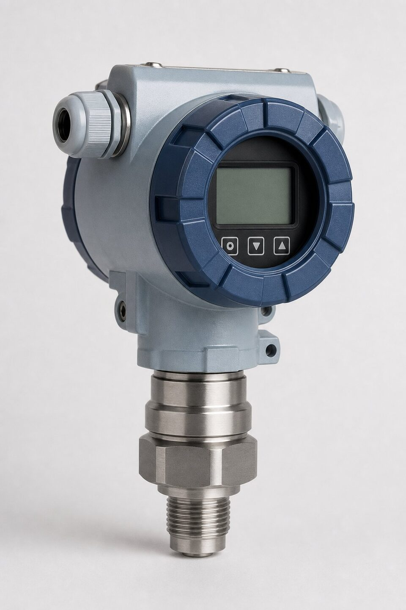

خانواده (Cerabar) و جایگاه آن
خانواده (Cerabar) محصول برند اندرس هاسر، مجموعهای از ترانسمیترهای فشار گیج و مطلق برای کاربردهای عمومی تا نیمهحساس صنعتی است. این ترانسمیترها با سلولهای اندازهگیری سرامیکی یا فلزی عرضه میشوند و خروجی استاندارد به همراه پروتکل دیجیتال دارند. جایگاه این خانواده در سبد ابزار دقیق، نقاطی است که پایداری اندازهگیری، دوام در محیط صنعتی و راهاندازی ساده اهمیت دارد؛ از خطوط آب و هوای فشرده تا مخازن و خطوط فرایندی سبک.

اصول اندازهگیری؛ گیج و مطلق
در ترانسمیتر فشار گیج، سمت مرجع سنسور به اتمسفر راه دارد و فشار فرایند نسبت به فشار جو سنجیده میشود؛ این رایجترین انتخاب برای خطوط و مخازن باز است. در ترانسمیتر فشار مطلق، مرجع خلأ است و تغییرات فشار جو بر خوانش اثر نمیگذارد؛ بنابراین در نقاطی که فشار کاری به اتمسفر نزدیک است یا پایداری مرجع اهمیت دارد، مطلق انتخاب میشود. انتخاب اشتباه بین این دو، خود را به شکل خطای متغیر با تغییرات آب و هوایی یا خوانشهای ناپایدار نشان میدهد؛ پس در استعلام، نوع فشار را صریح ذکر کنید.
سلول سرامیکی در برابر فلزی
سلول اندازهگیری قلب ترانسمیتر است. سلولهای سرامیکی با تغییر ظرفیت خازنی کار میکنند و در برابر سایش و بسیاری سیالها مقاوماند؛ برای فشارهای متوسط و سیالهای عمومی انتخاب رایجی هستند. سلولهای فلزی نیز برای فشارهای بالاتر، دماهای بالاتر و سرویسهایی که پایداری مکانیکی بیشتری میخواهند استفاده میشوند. انتخاب سلول باید بر اساس رنج فشار، دمای سیال و سازگاری شیمیایی انجام شود؛ در صورت تردید، جدول سازگاری مواد سازنده را با سیال واقعی کنترل کنید.
کاربردهای رایج
- پایش فشار خطوط آب، هوا و گازهای عمومی.
- مخازن ذخیره و نقاط اندازهگیری سطح با فشار.
- پمپها و کمپرسورها برای پایش عملکرد.
- اسکیدها و پکیجهای فرایندی سبک.
- نقاطی که پایداری بلندمدت و نگهداری کم اهمیت دارد.
معیارهای انتخاب و نکات استعلام
برای استعلام ترانسمیتر فشار، شش پارامتر کلیدی را مشخص کنید: رنج فشار کاری (با حاشیه مناسب)، نوع فشار (گیج یا مطلق)، سیال و دمای آن، اتصال فرایند (سایز و نوع رزوه یا فلنج)، خروجی و پروتکل ارتباطی و الزامات محیطی مانند ناحیه خطر یا شستشوی بهداشتی. در پروژههای دارای وندورلیست، تایید برند و مدل پیش از سفارش الزامی است. مدارک تحویل نیز باید شامل گواهی کالیبراسیون و در صورت نیاز، تاییدیههای ناحیه خطر باشد.
جمعبندی
ترانسمیترهای فشار خانواده (Cerabar) گزینهای مطمئن برای طیف وسیعی از نقاط اندازهگیری هستند. با انتخاب درست نوع فشار، سلول متناسب سیال و ذکر کامل پارامترها در استعلام، اندازهگیری پایدار و قابل اتکا حاصل میشود و از خرید تجهیز نامتناسب با نقطه نصب جلوگیری میگردد.
سوالات رایج
ترانسمیتر فشار چه میکند؟
فشار فرایند را به سیگنال استاندارد (معمولاً چهار تا بیست میلیآمپر به همراه پروتکل دیجیتال) تبدیل کرده و به سیستم کنترل میفرستد تا پایش و کنترل فشار ممکن شود.
تفاوت فشار گیج و مطلق چیست؟
فشار گیج نسبت به فشار اتمسفر اندازهگیری میشود؛ فشار مطلق نسبت به خلأ. در نقاطی که تغییرات فشار جو بر اندازهگیری اثر میگذارد یا فشارهای نزدیک خلأ مهم است، سنسور مطلق انتخاب میشود.
سلول سرامیکی چه مزیتی دارد؟
مقاومت بالا در برابر سایش و بسیاری سیالهای خورنده، پایداری بلندمدت خوب و مناسب بودن برای فشارهای متوسط؛ در مقابل، سلولهای فلزی برای فشارهای بالا و سرویسهای خاص ترجیح داده میشوند.
در استعلام چه مواردی ذکر شود؟
رنج فشار، نوع فشار (گیج یا مطلق)، سیال و دمای آن، اتصال فرایند، خروجی و پروتکل ارتباطی و الزامات محیطی مانند ناحیه خطر.
مطالب مرتبط
با ذکر رنج، نوع فشار، سیال و پروتکل، ترانسمیتر فشار از برندهای معتبر به همراه مدارک کالیبراسیون عرضه میشود.
مشاهده صفحه محصول ← ثبت RFQ همین محصولتامین این تجهیزات را به پیشرو تجهیز فرتاک بسپارید
شرکت پیشرو تجهیز فرتاک تامینکننده تخصصی تجهیزات صنعتی برای پروژههای نفت، گاز، پتروشیمی، فولاد و نیروگاهی است. برای دریافت پیشنهاد فنی و قیمت، استعلام (RFQ) خود را ثبت کنید تا کارشناسان مهندسی فروش در کوتاهترین زمان پاسخ دهند.
- تامین ابزار دقیقترانسمیترها و آنالایزرهای برندهای معتبر
- تامین تجهیزات صنایع نفت و گازپکیج مواد مطابق وندورلیست